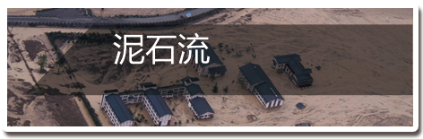

征兆：
泥石流来临前，一般会出现巨大的响声、沟槽断流和沟水变浑等现象。
泥石流发生时，泥石流携带巨石撞击产生沉闷的声音，明显不同于机车、风雨、雷电、爆破等声音。
沟槽内断流和沟水变浑，可能是上游有滑坡活动进入沟床，或泥石流已发生并堵断沟槽，这是泥石流即将发生最明显的前兆。
逃生：
1. 不要躲在有滚石和大量堆积物的下方
2. 不要爬到树上来躲避泥石流
3. 不要停留在陡坡土层较厚的低洼处或大石块后面
4. 要马上向泥石流流向呈垂直方向的两边山坡上跑
5. 发现山谷有异常的声音或听到警报时，要立即向坚固的高地或泥石流的旁侧山坡跑去，不要在谷地停留6. 设法从房屋里跑出来，到开阔地带，尽可能防止被埋压。
7. 发现泥石流后，要马上与泥石流成垂直方向一边的山坡上面爬，爬得越高越好，跑得越快越好，绝对不能向泥石流的流动方向走。发生山体滑坡时，同样要向垂直于滑坡的方向逃生。
8. 要选择平整的高地作为营地，尽可能避开有滚石和大量堆积物的山坡下面，不要在山谷和河沟底部扎营。